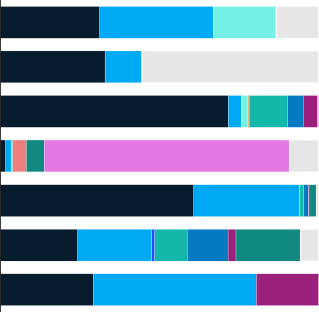
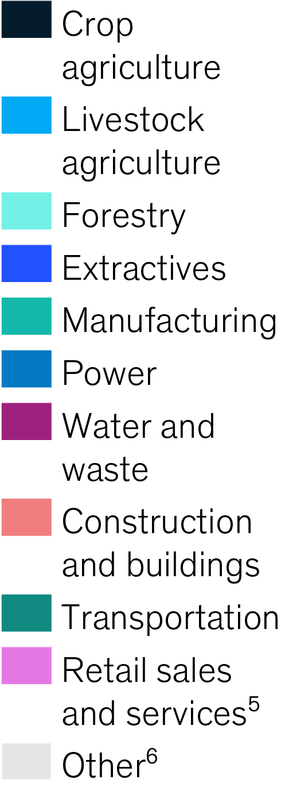

Agriculture is the largest contributor to exceeding planetary boundaries,
as currently understood, followed by retail sales and services.
Sectoral contributions¹ toward each planetary boundary,
% on relative scale
Boundary

Hover for source information
McKinsey & Company
Note: Analysis focuses on five of the nine planetary boundaries. For two planetary boundaries (ocean acidification and atmospheric aerosol loading), an absence of reliable data prevented analysis, while the analysis excludes ozone depletion since it is on a path to recovery. Greenhouse-gas emissions are excluded because they are well covered in other reports. Refer to Technical Appendix section 2 for a detailed analytical approach for each boundary.
¹Sectoral contributions are calculated based on direct operations and do not account for upstream or downstream impacts (for example, construction contributes to biodiversity loss primarily through the purchase of materials, not directly).
²The biodiversity intactness index (BII) is an estimated percentage of the preindustrial (pre-1750) number of species that remain and their abundance in any given area, given the prevalence of human impact in that area. BII does not extend to marine environments.
³This report uses a data set from the Food and Agriculture Organization (FAO), focusing on deforestation since 2000, and defines deforestation as a persistent conversion of forest to any other land use. This differs from other databases, such as Global Forest Watch, which classifies any sort of forest degradation as deforestation. Natural forest conversion to plantation forests is not considered forest cover loss in the planetary-boundaries framework because plantation forests still enable land–climate interactions. Report assumes no forestry-induced forest cover loss because that sector converts primary forest to secondary and plantation forest, which still conserves total forest cover.
⁴Nitrogen runoff: global nitrogen runoff contributing to surface water eutrophication risk; nitrogen deposition: global nitrogen deposition contributing to terrestrial ecosystem eutrophication and acidification risk; phosphorus pollution: global phosphorus pollution contributing to surface water eutrophication risk. This report’s calculation for phosphorus pollution attributed to livestock agriculture includes both runoff and leaching from pastureland and excess manure waste.
⁵Includes retail, accommodation and food services, IT, finance and insurance, professional and support services, education, health, and entertainment.
⁶This category includes biodiversity and forest loss attributed to grassland, peatland, bare land, and shrubland on primary forest which is not directly attributable to sectoral activities, as well as a very small contribution from urban land use.
Source: British Geological Survey; Carbon Dioxide Information Analysis Center (CDIAC); European Space Agency (ESA) Climate Change Initiative: Land Cover led by UCLouvain; Fei Lun et al., “Global and regional phosphorus budgets in agricultural systems and their implications for phosphorus-use efficiency,” Earth System Science Data, 2018, Volume 10; Food and Agriculture Organization of the United Nations (FAO); Franciska T. de Vries et al., “Soil food web properties explain ecosystem services across European land use systems,” Proceedings of the National Academy of Sciences, 2013, Volume 110, Number 35; Global Runoff Data Centre; Johannes Gütschow et al., “The PRIMAP-hist national historical emissions time series,” Earth System Science Data, November 2016, Volume 8, Number 2; Jurate Miliute-Plepiene, Anna Fråne, and Alexandra Maria Almasi, “Overview of polyvinyl chloride (PVC) waste management practices in the Nordic countries,” Cleaner Engineering and Technology, October 2021, Volume 4; Lawrence N. Hudson et al., “The database of the PREDICTS (Projecting Responses of Ecological Diversity In Changing Terrestrial Systems) project,” Ecology and Evolution, January 2017, Volume 7, Number 1; L.F. Schulte-Uebbing et al., “From planetary to regional boundaries for agricultural nitrogen pollution,” Nature, October 19, 2022, Volume 610; Maya Zomer, Bruno Moreira, and Juli G. Pausas, “Fire and summer temperatures interact to shape seed dormancy thresholds,” Annals of Botany, June 2022, Volume 129, Number 7; Monica Crippa et al., “EDGAR v4.3.2 Global Atlas of the three major greenhouse gas emissions for the period 1970–2012,” Earth System Science Data, July 2019, Volume 11, Number 3; Natural History Museum London; National Oceanic and Atmospheric Administration (NOAA); P. Defourny et al., “Land cover CCI product user guide version 2.0,” European Space Agency, updated April 10, 2017; Rick J. Hogeboom, Luuk Knook, and Arjen Y. Hoekstra, “The blue water footprint at the world’s artificial reservoirs for hydroelectricity, irrigation, residential and industrial water supply, flood protection, fishing and recreation,” Advances in Water Resources, February 9, 2018, Volume 113; Roland Geyer et al., “Production, use, and fate of all plastics ever made,” Science Advances, July 2017, Volume 3, Number 7; Stephanie B. Borrelle et al., “Predicted growth in plastic waste exceeds efforts to mitigate plastic pollution,” Science, September 18, 2020, Volume 369, Number 6510; Stockholm Resilience Center; Tim Newbold et al., “Has land use pushed terrestrial biodiversity beyond the planetary boundary? A global assessment,” Science, July 15, 2016, Volume 353, Number 6296; Urs Gasser et al., “Digital tools against COVID-19: Taxonomy, ethical challenges, and navigation aid,” The Lancet Digital Health, August 2020, Volume 2, Number 8; Vivid Economics; Water Footprint Network; Will Steffen et al., “Planetary boundaries: Guiding human development on a changing planet,” Science, January 2015, Volume 347, Number 6223; Winnie Lau et al., “Evaluating scenarios toward zero plastic pollution,” Science, July 23, 2020, Volume 369; World Bank; McKinsey Energy Insights; McKinsey Nature Analytics
Control variable
Percentage contribution
Biodiversity loss
Biodiversity intactness index (BII)²
Forest cover loss³
Forested land as a percent of potential forest cover
Freshwater
consumption
Blue-water consumption
Chemical and plastic pollution
Plastic-waste emissions to aquatic environments
Nutrient pollution⁴
Nitrogen runoff
(aquatic)
Nitrogen deposition
(terrestrial)
Phosphorous pollution

